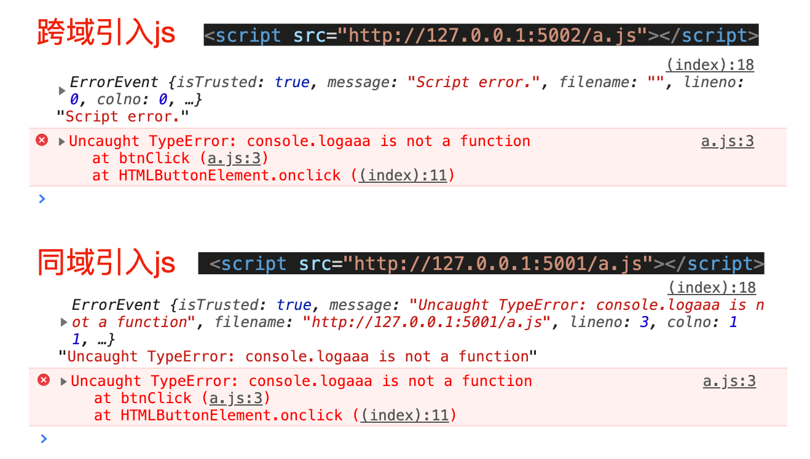
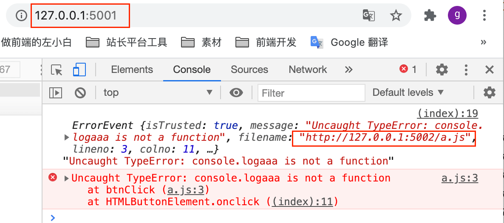

Script error产生原因与解决方法、调试技巧
这篇文章发布于 2020/11/23，归类于 JavaScript
标签：
script error，script error是什么错误
一般为了安全起见，如果当前页面引入了跨域的 js 文件，当这个 js 文件出现错误，监听错误会无法获取对应的行号、真实的错误message。这种情况错误信息就是 Script error.
本地来做一个试验，重现该问题，用 koa 写两个服务，分别监听 5001/5002端口，同时开启服务
/**
* index_a.js
* index_b.js 代码和下面的基本一致，只是将 5001 改为 5002
*/
const Koa = require('koa')
const app = new Koa()
app.use(require('koa-static')(__dirname + '/public'))
app.listen('5001', () => {
console.log('server listen on 5001 port')
})public/index.html 测试页面中，我们引入 5001端口的 a.js 或 5002 端口的 a.js，看具体 error 信息
<body>
<button onclick="btnClick()">点击</button>
<script src="http://127.0.0.1:5001/a.js"></script>
<!-- <script src="http://127.0.0.1:5002/a.js"></script> -->
<script>
window.addEventListener('error', e => {
console.log(e, e.message)
})
</script>
</body>
<!--
// a.js代码
function btnClick() {
console.logaaa('aaa') // 故意制造一个错误
}
-- >访问 http://127.0.0.1:5001/index.html，然后测试不同端口下执行情况，具体如下图

知道问题后，我们可以通过使用同域的方式引入 js。如果一定要使用跨域的，需要设置下面两点
- script引入时加入 crossorigin="anonymous"，anonymous 即不发送 Cookie 和 HTTP 认证信息
- 服务器对应的js，增加允许跨域
// html里
// <script src="http://127.0.0.1:5002/a.js" crossorigin="anonymous"></script>
// index_b.js 5002端口增加允许跨域
const Koa = require('koa')
const app = new Koa()
// 允许跨域
app.use(async (ctx, next) => {
ctx.set({
'Access-Control-Allow-Origin': '*',
'Access-Control-Allow-Headers': '*',
'Access-Control-Allow-Methods': '*',
'Access-Control-Allow-Credentials': 'true', // 允许携带cookie
'Access-Control-Max-Age': 3600 // 对于相同的请求，仅在第一次发送options预检请求，之后1小时内不需要预检请求
})
await next()
})
app.use(require('koa-static')(__dirname + '/public'))
app.listen('5002', () => {
console.log('server listen on 5002 port')
})设置好后，我们再测试就会发现可以正常显示跨域的信息了。如下图，完整demo参见 跨域Script_error测试demo | github
